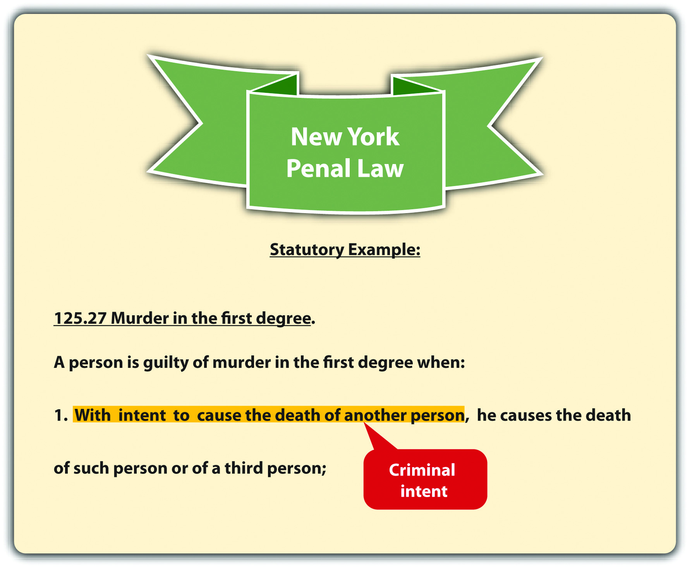
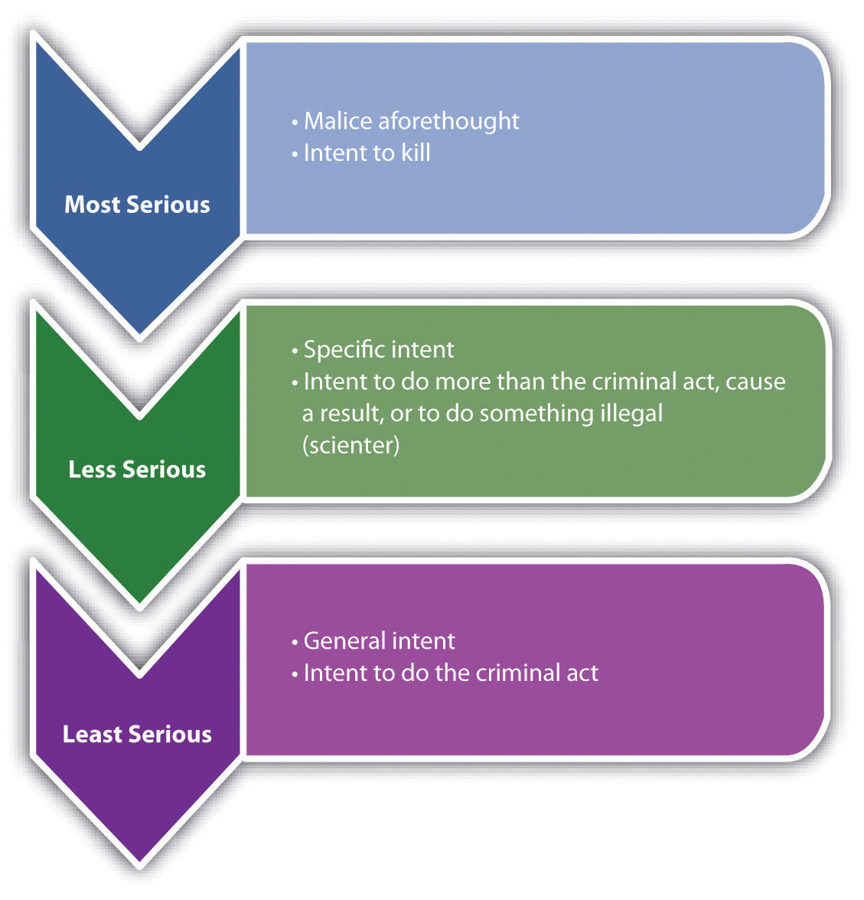
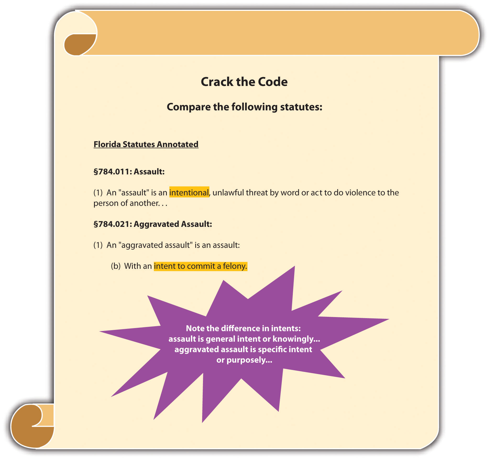
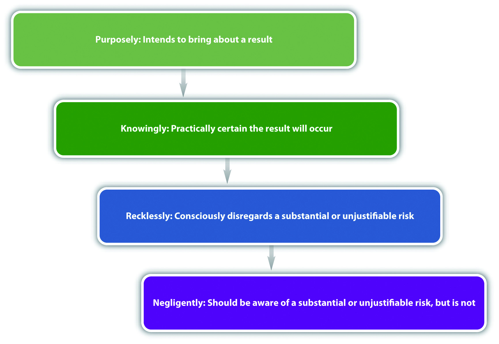

Although there are exceptions that are discussed shortly, criminal intentThe mental state required for a crime; also called mens rea. or mens rea is an essential element of most crimes. Under the common law, all crimes consisted of an act carried out with a guilty mind. In modern society, criminal intent can be the basis for fault, and punishment according to intent is a core premise of criminal justice. As stated in Chapter 1 "Introduction to Criminal Law", grading is often related to the criminal intent element. Crimes that have an “evil” intent are malum in se and subject the defendant to the most severe punishment. Crimes that lack the intent element are less common and are usually graded lower, as either misdemeanors or infractions.
Figure 4.5 New York Penal Law
States and the federal government vary in their approach to defining criminal intent, and each jurisdiction describes the criminal intent element in a criminal statute, or case, in jurisdictions that allow common-law crimes. In this section, common-law definitions of criminal intent are explored, along with definitions of the criminal mental states in the Model Penal Code.
The common-law criminal intents ranked in order of culpability are malice aforethoughtIntent to kill, which is the common-law intent for murder., specific intentThe common-law intent to cause a specific result, do something other than the criminal act, or scienter., and general intentThe common-law intent to perform the criminal act.. Statutes and cases use different words to indicate the appropriate level of intent for the criminal offense, so what follows is a basic description of the intent definitions adopted by many jurisdictions.
Malice aforethought is a special common-law intent designated for only one crime: murder. The definition of malice aforethought is “intent to kill.” Society considers intent to kill the most evil of all intents, so malice aforethought crimes such as first- and second-degree murder generally mandate the most severe of punishments, including the death penalty in jurisdictions that allow for it. Malice aforethought and criminal homicide are discussed in detail in Chapter 9 "Criminal Homicide".
Specific intent is the intent with the highest level of culpability for crimes other than murder. Unfortunately, criminal statutes rarely describe their intent element as “specific” or “general,” and a judge may be required to define the level of intent using the common law or a dictionary to explain a word’s ordinary meaning. Typically, specific intent means that the defendant acts with a more sophisticated level of awareness.Connecticut Jury Instructions No. 2.3-1, accessed February 14, 2011, http://www.jud.ct.gov/ji/criminal/part2/2.3-1.htm. Crimes that require specific intent usually fall into one of three categories: either the defendant intends to cause a certain bad result, the defendant intends to do something more than commit the criminal act, or the defendant acts with knowledge that his or her conduct is illegal, which is called scienterThe intent to do an unlawful act..
A state statute defines mayhem as “physical contact with another, inflicted with the intent to maim, disfigure, or scar.” This statute describes a specific intent crime. To be guilty of mayhem under the statute, the defendant must inflict the physical contact with the intent of causing the bad result of maiming, disfigurement, or scarring. If the prosecution cannot prove this high-level intent, the defendant may be acquitted (or charged and convicted of a lower-level intent crime like battery).
So if Pauline says, “It’s time to permanently mess up that pretty face,” and thereafter takes out a razor and slices Peter’s cheek with it, Pauline might be found guilty of mayhem. On the other hand, if Pauline slaps Peter while he is shaving without making the comment, and the razor bites into his cheek, it is more challenging to prove that she intended a scarring, and Pauline might be found guilty only of battery.
A state statute defines theft as “a permanent taking of property belonging to another.” This statute describes a specific intent crime. To be guilty of theft under the statute, the defendant must intend to do more than “take the property of another,” which is the criminal act. The defendant must also intend to keep the property permanently.
So if Pauline borrows Peter’s razor to shave her legs, she has “taken the property of another,” but she has not committed theft for the simple reason that she intends to return the property after use.
Although the terms mens rea and scienter are sometimes used interchangeably, many jurisdictions define scienter as knowledge that an act is illegal. Scienter can be the basis of specific intent in some statutes. So a statute that makes it a crime to “willfully file a false tax return” may require knowledge that the tax return includes false information and that it will be unlawful to file it.U.S. v. Pompanio, 429 U.S. 10 (1976), accessed October 28, 2010, http://supreme.justia.com/us/429/10/case.html. If the prosecution fails to prove beyond a reasonable doubt that the defendant knew his or her conduct was illegal, this could nullify scienter, and the prosecution cannot prove specific intent.
General intent is less sophisticated than specific intent. Thus general intent crimes are easier to prove and can also result in a less severe punishment. A basic definition of general intent is the intent to perform the criminal act or actus reus. If the defendant acts intentionally but without the additional desire to bring about a certain result, or do anything other than the criminal act itself, the defendant has acted with general intent.People v. McDaniel, 597 P.2d 124 (1979), accessed February 14, 2011, http://scholar.google.com/scholar_case?case=8266915507346002022&hl=en&as_sdt=2&as_vis=1&oi=scholarr.
Intent is a notoriously difficult element to prove because it is locked inside the defendant’s mind. Ordinarily, the only direct evidence of intent is a defendant’s confession, which the government cannot forcibly obtain because of the Fifth Amendment privilege against self-incrimination. Witnesses who hear the defendant express intent are often unable to testify about it because of evidentiary rules prohibiting hearsay. However, many jurisdictions allow an inference of general intent based on the criminal act.Commonwealth v. Ely, 444 N.E.2d 1276 (1983), accessed February 13, 2011, http://scholar.google.com/scholar_case?case=369554378994187453&hl=en&as_sdt=2&as_vis=1&oi=scholarr. In essence, if the jury accepts the inference, the prosecution does not have the burden of proving intent for a general intent crime.
A state statute defines battery as “intentional harmful or offensive physical contact with another.” This statute describes a general intent crime. To be guilty of battery under the statute, the defendant must only intend the harmful or offensive contact. The defendant does not have to desire that the contact produces a specific result, such as scarring, or death; nor does the defendant need scienter, or awareness that the physical contact is illegal.
If Addie balls up her fist and punches Eddie in the jaw after Eddie calls her a “stupid idiot,” Addie has probably committed battery under the statute. A prosecutor could prove that Addie committed the act of harmful or offensive contact using Eddie’s testimony and a physician’s report. The jury could thereafter be instructed to “infer intent from proof of the act.” If the jury accepts the inference and determines that Addie committed the criminal act, the jury could find Addie guilty of battery without additional evidence of intent.
Figure 4.6 Common Law Intents
Intent should not be confused with motiveThe reason the defendant performs the criminal act., which is the reason the defendant commits the criminal act or actus reus. Motive can generate intent, support a defense, and be used to determine sentencing. However, motive alone does not constitute mens rea and does not act as a substitute for criminal intent.
Isabella, a housewife with no criminal record, sits quietly in court waiting to hear the jury verdict in a trial for the rape of her teenage daughter by Ignatius. Ignatius has been convicted of child rape in three previous incidents. The jury foreman announces the decision finding Ignatius not guilty. Ignatius looks over his shoulder at Isabella and smirks. Isabella calmly pulls a loaded revolver out of her purse, and then shoots and kills Ignatius. In this case, Isabella’s motive is revenge for the rape of her teenage daughter, or the desire to protect other women from Ignatius’ conduct. This motive generated Isabella’s criminal intent, which is malice aforethought or intent to kill. In spite of Isabella’s motive, which is probably understandable under the circumstances, Isabella can be found guilty of murder because she acted with the murder mens rea. However, Isabella’s motive may be introduced at sentencing and may result in a reduced sentence such as life in prison rather than the death penalty. In addition, Isabella’s motive may affect a prosecutor’s decision to seek the death penalty at all because this would probably be disfavored by the public.
The Model Penal Code divides criminal intent into four states of mind listed in order of culpability: purposelyThe Model Penal Code intent to cause a specific result., knowinglyUnder the Model Penal Code, the defendant is aware of the nature of the act and is practically certain of the consequences., recklesslyUnder the Model Penal Code, the defendant is aware of a substantial risk of injury or harm, and unjustifiably takes it anyway., and negligentlyUnder the Model Penal Code, the defendant is unaware of a substantial risk of injury or harm, but should be, and unjustifiably deviates from the standard of care..
A defendant who acts purposely intends to engage in conduct of that nature and intends to cause a certain result.N.H. Rev. Stat. Ann. § 626:2(II)(a), accessed February 14, 2011, http://www.gencourt.state.nh.us/rsa/html/LXII/626/626-2.htm. Purposeful criminal intent resembles specific intent to cause harm, which was discussed previously. As the Model Penal Code states, “[a] person acts purposely with respect to a material element of an offense when: (i) if the element involves the nature of his conduct or a result thereof, it is his conscious object to engage in conduct of that nature or to cause such a result” (Model Penal Code § 2.02 (2) (a)).
Review the example given in Section 4 "Example of Specific Intent to Bring about a Bad Result", where Pauline takes out a razor and slices Peter’s cheek. In this example, Pauline is aware of the nature of the act (slicing someone’s cheek with a razor). Pauline also appears to be acting with the intent to cause a specific result, based on her statement to Peter. Thus Pauline is acting with specific intent or purposely and can probably be convicted of some form of aggravated battery or mayhem in most jurisdictions.
Knowingly indicates that the defendant is aware of the nature of the act and its probable consequences.Utah Code Ann. § 76-2-103(2), accessed February 14, 2011, http://le.utah.gov/~code/TITLE76/htm/76_02_010300.htm. Knowingly differs from purposely in that the defendant is not acting to cause a certain result but is acting with the awareness that the result is practically certain to occur.State v. Huff, 469 A.2d 1251 (1984), accessed February 14, 2011, http://scholar.google.com/scholar_case?case=4287195880403875631&hl=en&as_sdt=2&as_vis=1&oi=scholarr. The Model Penal Code describes knowingly as follows: “A person acts knowingly with respect to a material element of an offense when…he is aware that his conduct is of that nature…if the element involves a result of his conduct, he is aware that it is practically certain that his conduct will cause such a result” (Model Penal Code in § 2.02(2) (b)).
Victor brags to his girlfriend Tanya that he can shoot into a densely packed crowd of people on the subway train without hitting any of them. Tanya dares Victor to try it. Victor removes a concealed weapon from his waistband and shoots, aiming at a group of people standing with their back to him. The shot kills Monica, who is standing the closest to Victor. In this case, Victor did not intend to shoot Monica. In fact, Victor’s goal was to shoot and miss all the standing subway passengers. However, Victor was aware that he was shooting a loaded gun (the nature of the act) and was also practically certain that shooting into a crowd would result in somebody getting hurt or killed. Thus Victor acted knowingly according to the Model Penal Code. If the state in which Victor shoots Monica defines murder intent as knowingly under the Model Penal Code, then Victor has most likely committed murder in this case.
Figure 4.7 Crack the Code
Recklessly is a lower level of culpability than knowingly, and reckless intent crimes are not as common as offenses criminalizing purposeful, knowing conduct. The degree of risk awareness is key to distinguishing a reckless intent crime from a knowing intent crime. A defendant acts recklessly if he or she consciously disregards a substantial and unjustifiable risk that the bad result or harm will occur.Colo. Rev. Stat. Ann. § 18-1-501(8), accessed February 14, 2011, http://www.michie.com/colorado/lpext.dll?f=templates&fn=main-h.htm&cp=. This is different from a knowing intent crime, where the defendant must be “practically certain” of the bad results. The reckless intent test is two pronged. First, the defendant must consciously disregard a substantial risk of harm. The standard is subjective; the defendant must know of the substantial risk. Second, the defendant must take an unjustifiable risk, meaning that no valid reason exists for the risk. The standard for this prong is objective; if a reasonable person would not take the risk, then the defendant’s action in taking it is reckless. As the Model Penal Code states, “[t]he risk must be of such a nature and degree that…its disregard involves a gross deviation from the standard of conduct that a law-abiding person would observe in the actor’s situation” (Model Penal Code § 2.02(2) (c)).
Review the example in Section 4 "Example of Knowingly", where Victor shoots into a crowd of subway travelers and kills Monica. Change the example, and imagine that the subway train has only three passengers. Victor easily shoots in between them, yet the bullet ricochets off one of the seats and strikes Monica, killing her. Victor would be acting with reckless rather than knowing intent in this situation. Victor’s knowledge and awareness of the risk of injury or death when shooting a gun inside a subway car containing three passengers is probably substantial. A reasonable, law-abiding person would probably not take this action under these circumstances. Thus Victor might be charged with a lower-level form of criminal homicide like manslaughter in this case. The difference between murder and manslaughter is discussed in detail in Chapter 9 "Criminal Homicide".
Negligent intent crimes are less culpable than reckless intent crimes and are also less common. The difference between reckless and negligent intent is the defendant’s lack of awareness. While defendants committing negligent intent crimes are also faced with a substantial and unjustifiable risk, they are unaware of it, even though a reasonable person would be.Idaho Code Ann. § 18-101(2), accessed February 14, 2011, http://www.legislature.idaho.gov/idstat/Title18/T18CH1SECT18-101.htm. Thus the first prong of the reckless intent test is simply changed from a subjective to objective standard. As the Model Penal Code states, “[a] person acts negligently…when he should be aware of a substantial and unjustifiable risk that the material element exists or will result from his conduct”(Model Penal Code § 2.02(2) (d)).
Review the example in Section 4 "Example of Knowingly", where Victor shoots into a crowd of subway travelers and kills Monica. Change the example, and imagine that the subway train has no passengers. Victor brags to Tanya that he can shoot a crumpled napkin on the floor. Tanya challenges him to try it. Victor shoots at the napkin and misses, and the bullet ricochets three times off three different seats, travels backward, and strikes Tanya in the forehead, killing her instantly. In this case, Victor may be unaware of the bullet’s potential to ricochet several times and actually travel backward. However, the trier of fact can determine that a “reasonable person” would be aware that shooting a gun inside a small subway train could result in injury or death. This would be a finding that Victor acted negligently, under the circumstances. If the state in which Victor shot Tanya criminalizes negligent killings, then Victor could be found guilty of criminal homicide in this case.
Figure 4.8 Model Penal Code Criminal Intents Ranked from Most Serious to Least Serious
Occasionally, different criminal intents support the various elements of an offense. If a crime requires more than one criminal intent, each criminal intent must be proven beyond a reasonable doubt for each element.
Under the common law, every offense had just one criminal intent. In modern society, every offense has one criminal intent unless a statute specifies otherwise. As the Model Penal Code states, “[w]hen the law defining an offense prescribes the kind of culpability that is sufficient for the commission of an offense, without distinguishing among the material elements thereof, such provision shall apply to all of the material elements of the offense, unless a contrary purpose plainly appears” (Model Penal Code § 2.02(4)).
A state statute defines burglary as “breaking and entering into a residence at nighttime with the intent to commit a felony once inside.” In this statute, the elements are the following: (1) breaking, (2) and entering, (3) into a residence, (4) at nighttime. Breaking and entering are two criminal act elements. They must be committed with the specific intent, or purposely, to commit a felony once inside the residence. The elements of residence and nighttime are two attendant circumstances, which most likely have the lower level of general intent or knowingly. Thus this statute has four separate criminal intents that the prosecution must prove beyond a reasonable doubt for conviction.
An exception to the requirement of a criminal intent element is strict liabilityLiability without intent.. Strict liability offenses have no intent element.Ala. Code § 13A-2-3, accessed February 14, 2011, http://law.onecle.com/alabama/criminal-code/13A-2-3.html. This is a modern statutory trend, which abrogates the common-law approach that behavior is only criminal when the defendant commits acts with a guilty mind. Sometimes the rationale for strict liability crimes is the protection of the public’s health, safety, and welfare. Thus strict liability offenses are often vehicle code or tax code violations, mandating a less severe punishment.Tex. Penal Code § 49.04, accessed February 14, 2011, http://law.onecle.com/texas/penal/49.04.00.html. With a strict liability crime, the prosecution has to prove only the criminal act and possibly causation and harm or attendant circumstances, depending on the elements of the offense.
A vehicle code provision makes it a crime to “travel in a vehicle over the posted speed limit.” This is a strict liability offense. So if a law enforcement officer captures radar information that indicates Susie was traveling in a vehicle five miles per hour over the posted speed limit, Susie can probably be convicted of speeding under the statute. Susie’s protests that she “didn’t know she was traveling at that speed,” are not a valid defense. Susie’s knowledge of the nature of the act is irrelevant. The prosecution only needs to prove the criminal act to convict Susie because this statute is strict liability and does not require proof of criminal intent.
Occasionally, the defendant’s criminal intent is not directed toward the victim. Depending on the jurisdiction, this may result in a transfer of the defendant’s intent from the intended victim to the eventual victim, for the purpose of fairness.N.Y. Penal Law § 125.27(1), accessed February 14, 2011, http://www.nycourts.gov/cji/2-PenalLaw/125/125.27/Capital-Crimes/AC.125.Transferred-Intent.pdf. Although this is a legal fiction, it can be necessary to reach a just result. Transferred intentThe transfer of a defendant’s criminal intent from one victim to another, for the purpose of justice. is only relevant in crimes that require a bad result or victim. In a case where intent is transferred, the defendant could receive more than one criminal charge, such as a charge for “attempting” to commit a crime against the intended victim. Attempt and transferred intent are discussed in detail in Chapter 8 "Inchoate Offenses".
Billy and his brother Ronnie get into an argument at a crowded bar. Billy balls up his fist and swings, aiming for Ronnie’s face. Ronnie ducks and Billy punches Amanda in the face instead. Billy did not intend to batter Amanda. However, it is unjust to allow this protective action of Ronnie’s to excuse Billy’s conduct. Thus Billy’s intent to hit Ronnie transfers in some jurisdictions over to Amanda. Billy can also be charged with attempted battery, which is assault, of Ronnie, resulting in two crimes rather than one under the transferred intent doctrine.
Vicarious liabilityThe transfer of a defendant’s liability based upon a special relationship. is similar to respondeat superior, a civil law concept discussed in Chapter 1 "Introduction to Criminal Law". Vicarious liability transfers a defendant’s responsibility for the crime to a different defendant, on the basis of a special relationship. Under a theory of vicarious liability, the defendant does not need to commit the criminal act supported by criminal intent. The defendant just has to be involved with the criminal actor in a legally defined relationship. As in civil law, vicarious liability is common between employers and employees.
Corporate liabilityThe vicarious liability of a corporation. is a type of vicarious liability that allows a corporation to be prosecuted for a crime apart from its owners, agents, and employees.720 ILCS 5/5-4, accessed February 14, 2011, http://law.onecle.com/illinois/720ilcs5/5-4.html. This is a modern concept that did not exist at early common law. Although corporations cannot be incarcerated, they can be fined. Vicarious liability and corporate liability are discussed in more detail in Chapter 7 "Parties to Crime".
Don hires James to work in his liquor store. James is specially trained to ask for the identification of any individual who appears to be under the age of thirty and attempts to buy alcohol. One night, James sells alcohol to Ashley and does not request identification because Ashley is attractive and James wants to ask her out on a date. Unfortunately, Ashley is underage and is participating in a sting operation with local law enforcement. Certain statutes could subject Don to criminal prosecution for selling alcohol to an underage person like Ashley, even though Don did not personally participate in the sale. Because Don is James’s employer, he may be vicariously liable for James’s on-the-job conduct in this instance.
Another element of most criminal offenses is the requirement that the criminal act and criminal intent exist at the same moment.California Criminal Jury Instructions No. 252, accessed February 14, 2011, http://www.justia.com/criminal/docs/calcrim/200/252.html. This element is called concurrenceThe requirement that the criminal act and criminal intent exist at the same moment.. Concurrence is rarely an issue in a criminal prosecution because the criminal intent usually generates the bodily response (criminal act). However, in some rare instances, the criminal act and intent are separated by time, in which case concurrence is lacking and the defendant cannot be convicted of a crime.
Sherree decides she wants to kill her husband using a handgun. As Sherree is driving to the local gun shop to purchase the handgun, her husband is distracted and steps in front of her car. Sherree slams on the brakes as a reflex, but unfortunately she is unable to avoid striking and killing her husband. Sherree cannot be prosecuted for criminal homicide in this case. Although Sherree had formulated the intent to kill, the intent to kill did not exist at the moment she committed the criminal act of hitting her husband with her vehicle. In fact, Sherree was trying to avoid hitting her husband at the moment he was killed. Thus this case lacks concurrence of act and intent, and Sherree is not guilty of criminal homicide.
Answer the following questions. Check your answers using the answer key at the end of the chapter.
Ten Years Imprisonment for an Accident?
“Accidents happen. Sometimes they happen to individuals committing crimes with loaded guns.” Read Dean v. U.S., 129 S. Ct. 1849 (2009)), which is available at this link: http://scholar.google.com/scholar_case?case=10945987555184039397&q= Dean+v.+U.S.&hl=en&as_sdt=2,5.
In Dean, the defendant was sentenced to ten years imprisonment under a federal sentencing enhancement for an accidental discharge of his firearm during a bank robbery. The prosecution presented evidence at trial indicating that the defendant went into the bank wearing a mask and carrying a loaded firearm. The defendant told everyone in the bank to “get down,” and then went behind the tellers’ station and began grabbing money with his left hand. The gun in his right hand discharged. The defendant seemed surprised by the discharge, cursed, and ran out of the bank. No one was injured or hurt during the robbery.
The defendant thereafter admitted he committed the robbery. The US Supreme Court upheld the defendant’s sentencing, in spite of the fact that there was no evidence of intent to discharge the firearm. The Court based its holding on the plain meaning of the statute requiring a minimum sentence of ten years imprisonment when a firearm is discharged during a robbery. The statute, 18 U.S.C. § 924(c) (1) (A), does not expressly state a criminal intent requirement. The Court further held that a presumption of criminal intent was not required. As the Court stated, “[i]t is unusual to impose criminal punishment for the consequences of purely accidental conduct. But it is not unusual to punish individuals for the unintended consequences of their unlawful acts” (Dean v. U.S., 129 S. Ct. 1849, 1855 (2009)).
Check your answer using the answer key at the end of the chapter.